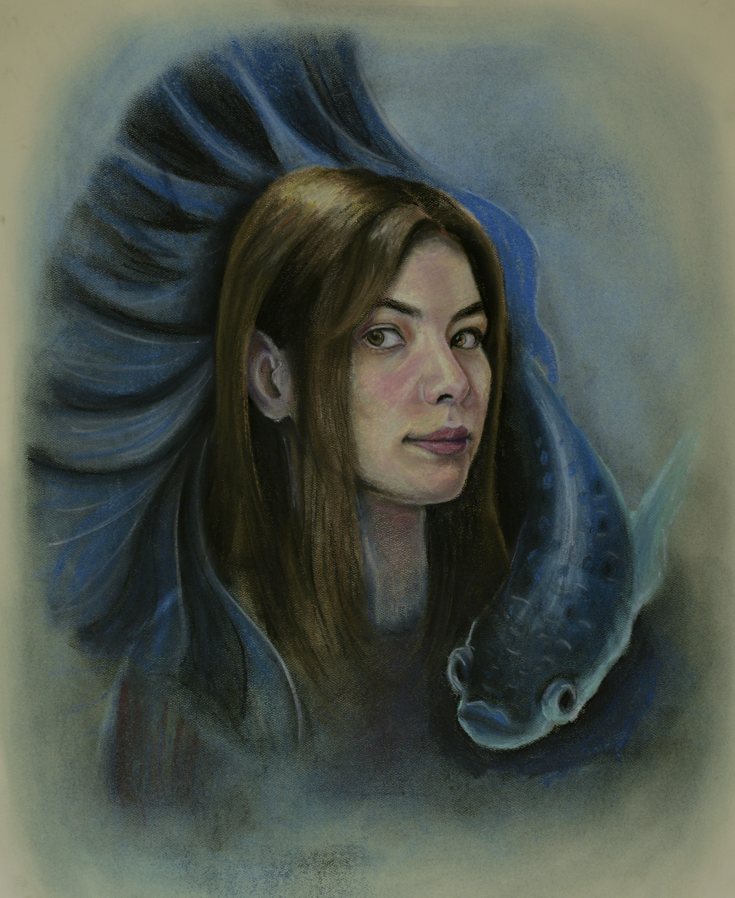

ANNA ROZMETOVA IS A VISUAL ARTIST FROM TURKMENISTAN. SHE GRADUATED FROM NORTHWEST COLLEGE IN WYOMING WITH A FINE ART MAJOR AND A 4.0 GPA, AND CURRENTLY CONTINUES HER ARTISTIC PRACTICE IN THE UNITED STATES ON OPT. HER WORK EXPLORES EMOTION, MEMORY, AND THE QUIET RELATIONSHIPS BETWEEN PEOPLE AND NATURE THROUGH PAINTING, DRAWING, SCULPTURE, AND PRINTMAKING.
IN ADDITION TO HER STUDIES, ANNA WORKED IN THE COLLEGE’S ART DEPARTMENT, ASSISTED WITH GALLERY INSTALLATIONS AND STUDENT EXHIBITIONS. HER CREATIVE PRACTICE REFLECTS HER BELIEF THAT ART IS A LANGUAGE OF EMOTION — ONE THAT CONNECTS PEOPLE BEYOND WORDS.